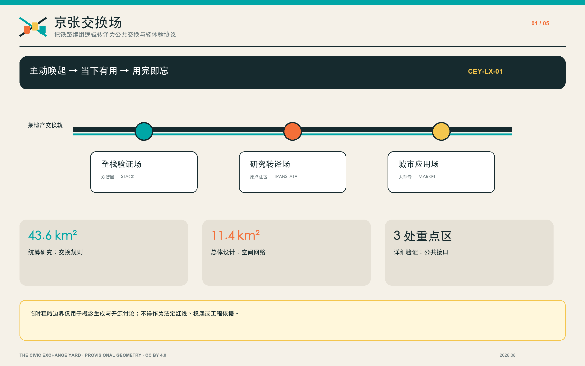
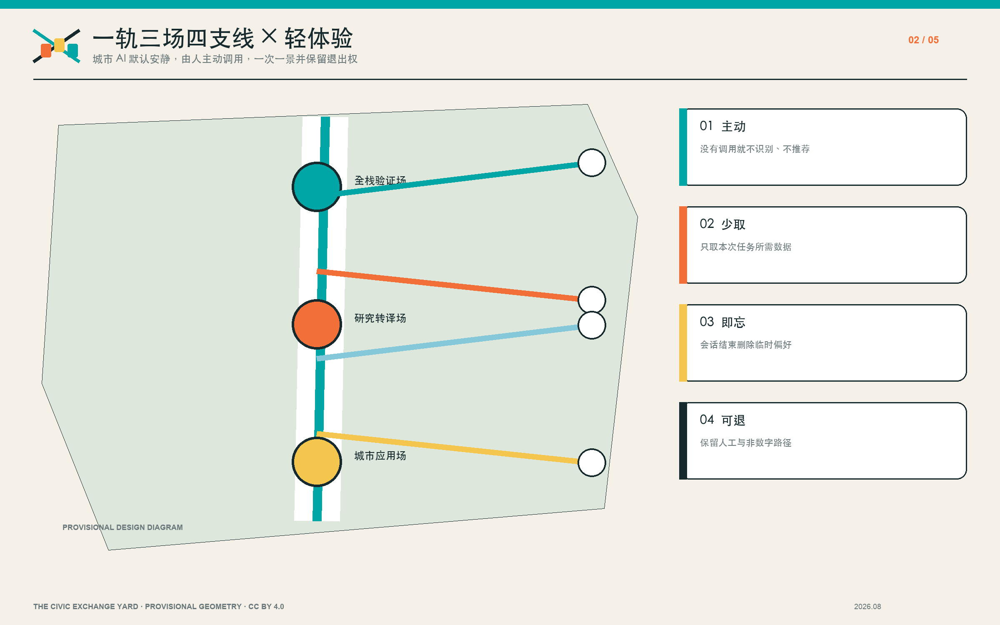
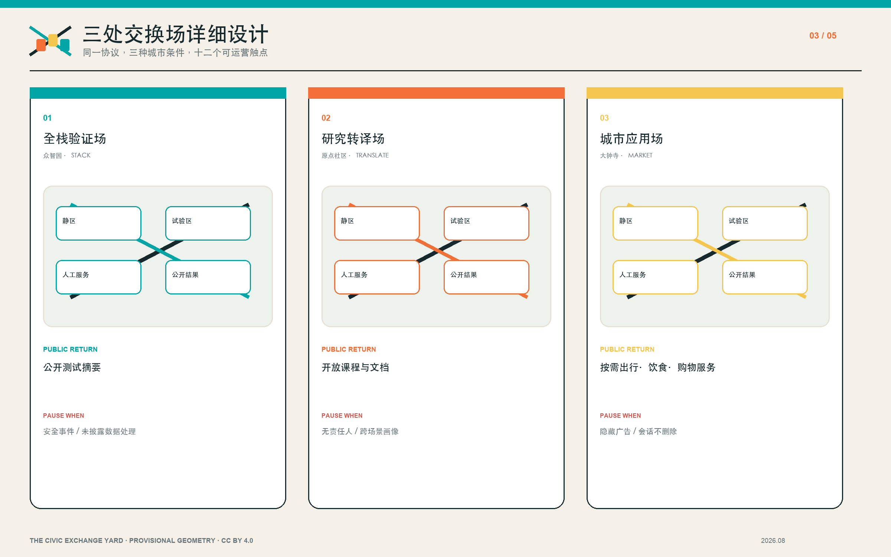
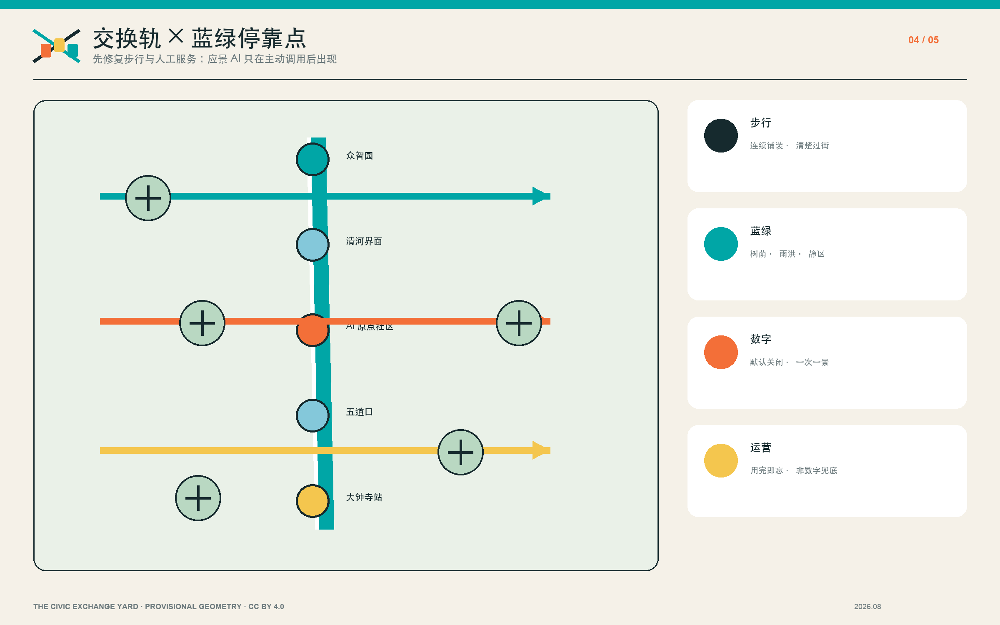
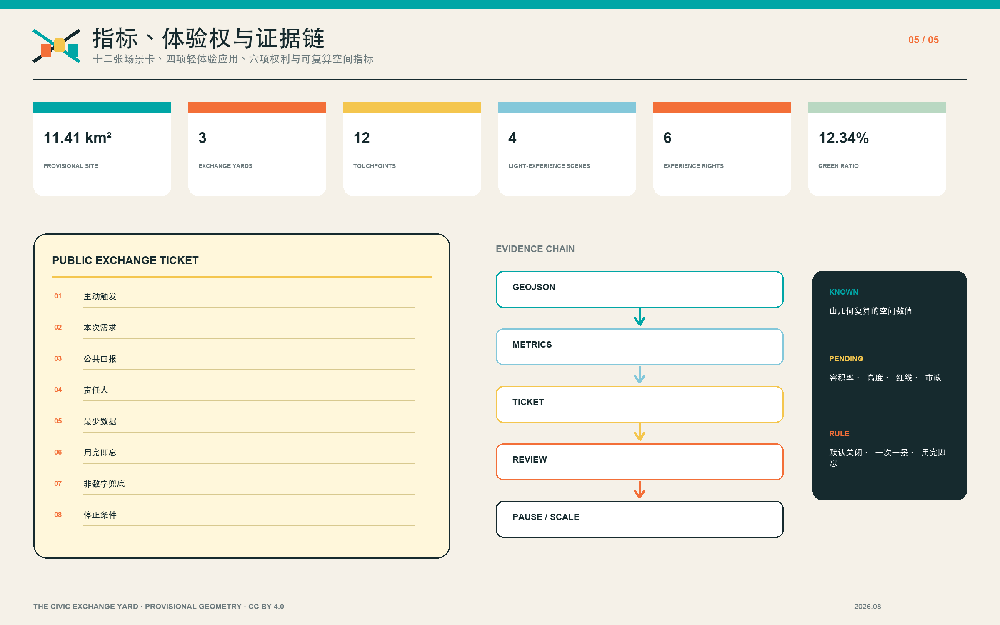

京张交换场 / THE CIVIC EXCHANGE YARD
把百年铁路的编组与交换逻辑转译为AI创新带的公共空间协议：三处交换场、四类支线、十二个触点，以及一套主动唤起、一次一景、用完即忘的轻体验协议。
京张交换场 / THE CIVIC EXCHANGE YARD
不是把 AI 企业排成一条走廊，而是把研究、产品、城市问题与公共回报编组到同一座“交换场”。城市 AI 默认安静，由人在需要的当下主动唤起，提供少量、精准、可解释的帮助，用完即走。
设计依据与资料清单
方案以北京市规划和自然资源委员会海淀分局发布的征集公告为任务依据，以仓库 brief/site-package/、data/source_registry.json 和 data/processed/agent_fact_pack.md 为机器可读工作底图 来源 来源 来源。公告给出约 43.6 平方公里统筹研究范围、约 11.4 平方公里总体设计范围，以及众智园 192.1 公顷、北京 AI 原点社区 104.3 公顷、大钟寺 72.0 公顷三处重点区域；仓库尚未提供正式范围 polygon，因此本包使用维护者登记的临时粗略边界，只用于概念生成、空间校核和开源讨论，不能解释为法定红线、权属边界或工程放线 空间数据 空间数据。
项目任务和城市设计管理依据分别来自征集文件与城市设计管理要求 标准 标准 标准。控制性详细规划表达与国土空间用途分类另行校核 标准 标准。外部案例只用于比较“如何把 AI 能力变成可测试、可进入、可追责的公共机制”：AI Verify 与英国 AISI 对应测试和安全治理，Mila、Maria 01 与 Station F 对应研究—社区—企业的空间组织，Barcelona Impulsa 对应城区尺度的经济议程。它们不构成本地规划控制、投资承诺或政府背书；来源和用途边界完整登记在 sources.json。缺少正式控规、现状建筑、权属、市政、消防、文保与地下空间条件的事项进入 assumptions.json，不以推测值补空。

三层范围工作框架
“交换场”借用铁路编组场的工作逻辑：不同来源、不同目的地和不同安全等级的对象，先识别、再编组、随后通过可追踪的道岔进入下一段旅程。统筹研究范围回答“海淀的 AI 资源如何形成可重复的交换规则”，总体设计范围回答“规则如何落实为空间网络与公共接口”，三处重点区域则验证“每一种交换如何在真实街区中被看见、被使用、被退出”。三层并非三个互不相干的比例尺，而是一条从产业生态到日常体验、再回到绩效审计的证据链 深度 深度。
空间结构由“一条遗产交换轨、三处交换场、四类公共支线、十二个交换触点”组成。遗产交换轨沿京张遗址公园组织连续慢行、历史叙事与活动流；三处交换场分别是众智园“全栈验证场”、原点社区“研究转译场”、大钟寺“城市应用场”；四类支线分别连接高校研究、企业产品、社区需求和国际协作；十二个触点承担测试、发布、服务、学习、休憩和申诉。每个触点都使用“公共交换凭证”：明确主动触发方式、本次需求、公共回报、责任主体、最少数据、用途、保存期限、禁止跨场景关联、非数字兜底和停止条件。这一机制让“产业带”从地理串联升级为可审计的互惠网络，而不是重复同质化园区。

统筹研究范围产业与未来城市研究
统筹研究不新增伪精确空间边界，而是提出“交换率”这一运营视角：AI 资源进入城区后，是否形成了可复用的公共回报。高校和研究机构提供方法、人才与开源成果；企业提供产品、服务与测试能力；社区提供具体问题、使用反馈和公共监督；城市平台提供合规接口、公共空间和长期维护。交换不是一次性活动，而是按季度登记的组合：开放课程、无障碍服务时段、公开测试摘要、可复用数据说明、树荫与雨洪设施、社区法律或医疗咨询等均可作为回报，但须由相应专业主体负责，不能以 AI 输出替代专业判断 深度。
产业链采用“研究提出—场景配对—小规模试验—第三方复核—公开回报—复制或停止”六步闭环。全栈验证场服务模型、安全、标准和端侧能力；研究转译场把高校成果转成开源组件、创业团队和公共课程；城市应用场让智能体、终端、内容消费与数据服务在轨道站点周边接受真实用户检验。未来城市形态因此不是巨型地标或封闭园区，而是高频、小尺度、可进入的交换界面：首层开放、站园缝合、夜间共享、低门槛展示、清晰的隐私提示与人工服务窗口。
轻体验城市：应景 AI 与体验权
城市 AI 不以持续识别居民为前提，而成为由人主动调用的轻量公共能力：在需要的地点和时刻，只回答眼前问题，完成任务后立即退出。乘车时，它根据当前起终点、班次、拥挤度和无障碍需求给出路线；吃饭时，它在用户明确提出后比较距离、等候、价格和饮食限制；购物时，它提供比价、维修、退换、可达性与赞助披露。三类服务都不得把一次会话自动流入另一场景，不得以广告竞价冒充公共推荐，也不得因拒绝授权而降低基本城市服务 指标。
体验权与沉默权同时成立。六项基础权利是主动体验、保持沉默、匿名使用、拒绝授权、理解推荐和会话删除；执行规则是默认关闭、一次一景、优先端侧或匿名聚合、明确保存期限、用完即忘、商业内容显著标识，并始终保留物理导视、价目表、人工窗口和普通购票等非数字方式。该协议是待法规、网络安全、无障碍、交通运营和商户共同复核的设计建议，不声称现有城市系统已经具备这些能力 深度 深度。
五类使用者分别是开源开发者、初创团队、企业访客、高校师生和周边居民。方案用“公共回报/使用门槛/责任主体”三项同时评价空间，防止只按企业数量或流量判断成功。Mila 的研究共同体、Maria 01 的创业校园和 Station F 的伙伴计划提供组织方式参考；AI Verify 与 AISI 提醒测试必须可解释并保留人工责任。所有案例仅为背景机制，是否适用于海淀需经本地法规、运营能力和公众参与复核。
总体设计范围城市更新与控规深度城市设计
总体设计将 11.4 平方公里临时边界视为“可替换底板”，先建立不会因正式 polygon 更新而失效的关系规则。用地层按现有脚手架分区表达创新研发、公共服务、开放空间与复合功能，并保持闭合、无重叠的拓扑；建筑层只表达设计性改造基底，不推断权属、现状质量或拆除结论；道路层在南北主线之外新增三条横向“交换支线”，对应北部验证、中部转译和南部应用；绿地、公共空间与分期图层均使用可复算面积 空间数据 空间数据 空间数据。
控规深度通过“已知—建议—待确认”三级表达。已知项只有公告尺度、仓库登记来源与提交几何可复算值；建议项包括首层公共交换界面、支线慢行、可逆设施和年度运营；容积率、建筑高度、密度、退线、道路红线、市政容量、消防与防洪均列为待确认，不使用伪精确数值 深度 深度 深度。拆改留采用“先运营、再轻改、后专业深化”：先以时段开放和活动验证需求，再用可逆雨棚、导视、座椅和无障碍补丁改善，只有在正式调查、权属协同和专业审查完成后讨论结构性更新。
综合承载不是单一建筑规模，而是交通、公共空间、能源、算力、夜间管理和服务人员共同形成的容量。每处交换场设置高峰限流、人工服务与故障降级原则；每条支线优先处理过街、遮荫、连续铺装和自行车停放。建筑基底面积、绿地比和公共空间比来自提交图层，仅用于方案内部一致性复核 指标 指标 指标，正式边界发布后整体重算。
重点区域详细设计
众智园“全栈验证交换场”以清河绿色界面和可预约测试院为核心。首层布置安全治理窗口、端侧设备试验台、标准工作坊和公开结果墙；户外采用可移动遮棚、雨水花园和低速测试环。企业获得受控测试环境，公众获得无障碍开放时段、简明测试摘要和低碳公共空间。暂停条件包括安全事件、无法解释的数据处理或公众空间被长期占用。临时范围引用 空间数据，四至与工程条件需正式资料确认。
北京 AI 原点社区“研究转译交换场”组织一条连接高校、园区与社区的开源街。成果不以封闭展厅终止，而要经过“研究说明—可复用组件—小团队试验—公开课程—社区反馈”五个台阶。首层设置开放发布厅、知识产权与法务咨询、团队共用桌和安静学习室；夜间仅开放有独立管理条件的空间。公众回报包括开放课程、可访问文档和学生—居民共创时段；科研数据、校园边界和人脸身份信息不进入公共演示。临时范围引用 空间数据。
大钟寺“城市应用交换场”利用轨道站点与商业客流验证智能体、智能终端、内容消费和城市服务。四象限步行连通先从导视、过街等待、连续无障碍和可辨识入口做起；路演客厅与数据要素会客厅设置人工咨询、内容分级和撤回机制。餐饮、购物与换乘助手只在用户主动触发后开启一次会话，推荐说明排序依据和商业内容，会话结束即清除临时偏好。公众回报包括便民服务时段、安静休憩、可复用场景报告和社区商户培训。临时范围引用 空间数据。三处片区共同达到“功能、建筑、交通、公共空间、运营与依赖条件”六项表达深度 深度，但不代替法定详细规划。

AI 创新生态、人才画像与 AI+ 场景
十二张场景卡分为三组。验证组包括模型安全沙盒、端侧设备试验台、开放标准工作坊、低碳算力解释站；转译组包括开源发布厅、成果转化服务台、公共课程车厢、知识产权与数据合规门诊；轻体验应用组包括出行应景助手、饮食与邻里商户助手、购物比价·维修·退换助手、公共安全与内容复核台。每张卡写明服务对象、空间载体、主动触发、最少数据、用途、保存期限、跨场景关联禁令、人工负责人、非数字兜底、公众回报和停止条件。核心测试分别落在三处重点区，满足不少于三个产业测试验证场景的要求；国际路演与可访问内容交流仍通过年度“交换周”组织，不依赖个体画像。
五类画像不是用于个体预测，而是用于空间包容性检查。开发者需要可发布、可协作和夜间可用但不侵扰社区的空间；初创团队需要低成本试验与合规咨询；企业访客需要轨道接驳、清晰展示和国际交流；高校师生需要成果转化、学习与跨校协作；居民需要通勤、休憩、专业服务和对自动化决策的申诉入口。任何系统不得基于画像进行个体商业推荐，聚合使用数据应设保存期限并接受人工复核。
“公共交换凭证”是生态的治理接口，示例编号 CEY-01 至 CEY-12。凭证包含主动触发、本次需求、公共回报、责任人、最少数据、用途与保存期限、禁止跨场景关联、无障碍检查、投诉渠道、非数字兜底和季度复盘。未完成公开回报、发生未披露追踪或商业排序、连续发生安全事件、不能删除会话数据或缺少责任人的项目可被暂停使用公共空间。城市智能体只用于提示慢行断点、设施维护、企业服务匹配和活动风险，不替代审批、医疗、法律或公共安全专业决策。完整卡片与权利协议登记在 visual/assets/light_experience_protocol.json，并与交通、绿地及公共空间图层联动 空间数据 空间数据。
用地、建筑规模与拆改留方案
用地组织遵循“交换轨连续、交换场混合、公共回报可见”的原则。研发办公与企业服务围绕现有创新资源布置，公共服务和首层开放界面靠近步行支线，绿地与公共空间共同形成可全天候使用的停靠点。land_use.geojson 使用仓库允许的分类字段，不自造法定类别；图上强调功能关系，而不是宣称地块已经完成用途调整。正式用地边界、指标和兼容性须在获得法定控规后校核 标准。
建筑策略分三级：R 为保留并开放界面，A 为可逆适配，P 为待专业确认。R 类优先清理首层遮挡、补无障碍入口、标记开放时段；A 类加入可拆卸雨棚、共享家具、临时展陈、屋顶轻型绿化或端侧设备柜，必须经过结构、消防和运维审查；P 类涉及结构性改造、增建或功能置换，只在测绘、权属、文保、消防与市政资料齐全后进入设计。当前 buildings.geojson 是方案性基底，不表示现状建筑台账或拆迁判断 空间数据 深度。
建筑规模控制不填入未知的总建面、容积率或高度。方案转而提出可核查的界面指标：开放时段是否公布、入口是否无障碍、人工服务是否可达、公共回报是否完成、夜间噪声是否受控。待正式条件发布后，先重算边界和建筑基底，再由专业团队校核强度、日照、消防、交通与市政容量；任何新增体量都要证明其公共回报和基础设施承载，不以视觉地标本身作为合理性依据。
交通、轨道、市政与公共服务设施
交通系统由一条南北遗产交换轨和三条东西支线构成。北支线连接众智园、清河界面与外部交通；中支线缝合原点社区、高校边缘、五道口及清华东路西口方向；南支线连接大钟寺站四象限、企业入口和京张公园。先行措施是连续步行面、清楚过街、遮荫、夜间照明、无障碍坡道、自行车停放与步骑冲突提示。轨道站一体化以“出站后五分钟内看见交换场入口”为设计检验，不预设新增站体或地下工程 空间数据 深度。
出行应景助手只在扫码、轻触、语音询问或用户设备主动请求后启动，用当前起终点、班次、拥挤度、坡度、遮荫和无障碍选择生成一次路线；不持续追踪个人设备，不使用人脸识别，不把出行数据连接到餐饮或购物推荐。会话结束自动删除临时位置与偏好；发生数据异常或系统离线时，物理导视、站牌和人工人员继续提供基本服务。公共安全运营复核台只汇总活动容量、设备状态和人工报告，由授权人员决定处置；模型建议必须留痕并允许纠正。
市政与新基础设施遵循“小节点、可降级、可维护”。端侧算力柜与信息屏只有在电力、散热、噪声、网络安全和责任主体明确后布置；雨水花园、遮荫、饮水、厕所与休憩座椅被视为与数字设备同等重要的服务设施。缺少管线、防洪、消防和能源数据时仅标识需求点，不给出工程容量 空间数据 深度。

蓝绿空间、公共空间与城市风貌
蓝绿结构把京张遗址公园视为城市客厅而非产业背面。南北连续路径承载通勤、散步、骑行和年度活动，清河与小月河相关界面优先补树荫、雨水调蓄、可坐边缘和夜间安全照明。三处交换场各有一个“静区”和一个“试验区”：静区保留日常休憩与无障碍通行，试验区采用预约、限时、可撤除设施，防止创新活动挤占基本公共权利 空间数据 空间数据 深度。
公共空间使用公共交换凭证安排。企业或团队获得展示和测试时段，相应提供免费的公共服务、开放课程、场景报告或环境改善；社区提出的问题获得响应记录和退出权；维护方公布责任联系人、噪声上限、容量和恢复时间。每个数字触点同时显示“是否开启、用了什么、保存多久、谁负责、怎样退出”，未主动调用时保持静默，并保留不经过传感器或推荐系统也能完成任务的路径。空间表现采用耐久、易维护的“铁路设施语汇”：深墨色作为结构，信号青表示开放接口，编组橙表示活动，票签黄表示公共回报。导视图形由两条交叉轨和三个站签构成，保持开放边框，避免把遗产简化成怀旧装饰。
三处可识别地标不是高大构筑物，而是功能性公共界面：众智园的“公开结果墙”、原点社区的“开源贡献台”、大钟寺的“城市应用时刻牌”。它们分别显示测试摘要、可复用成果与当天公共服务时段，信息过期即下线。历史叙事通过里程、编组、道岔和车票的抽象语言连接百年京张与当代 AI，不复制受版权保护的标识，也不声称文保范围外的历史结论。
更新项目清单、实施政策与分期计划
近期（0—18 个月）以运营验证和可逆改造为主：CEY-01 三处交换场开放日历、CEY-02 公共交换凭证与轻体验协议原型、CEY-03 三条慢行支线断点巡查、CEY-04 三处功能地标、CEY-05 十二张场景卡小规模试验。依赖条件是空间授权、活动安全、无障碍审查、数据治理和明确维护者。季度复盘只用匿名聚合方式记录主动调用、任务完成、人工转接、退出、投诉、数据删除与暂停事件，不建立个人轨迹；没有足够需求或不能证明数据最小化的设施可以撤回，不把试点自动升级为永久建设。
中期（18—36 个月）在试点证据和正式规划条件基础上推进首层适配、蓝绿停靠点、站园缝合和共享服务空间；远期仅提出网络治理框架，包括跨场交换、年度开放周、公共回报审计和可复用数据文档。结构性改造、地下连接、道路工程和新增建筑都必须另行完成专业设计、审批与公众沟通。本提交不指定投资额、开发主体或征拆方案 空间数据 深度 深度。
运营由“场站管理员—专业复核者—公共观察员”三角协作。管理员维护日历与设施，专业复核者负责安全、法律、医疗、消防或数据等专门事项，公共观察员由社区、高校与使用者轮换提出意见。年度“交换周”不是大型一次性节庆，而是把三场成果串联的公开复盘：失败案例同样展示，以换取更可靠的下一轮决策。政策建议包括首层时段共享、公共空间有条件试验、公开回报登记、数据最小化模板和项目暂停机制。
指标体系、面积复算与合规矩阵
指标分为空间底板、运营绩效和待确认控制三类。空间底板由 GeoJSON 直接复算：临时总体范围约 11,412,825 平方米、三处重点区域和建筑基底约 310,807 平方米 指标 指标 指标。同一底板得到绿地比约 12.34% 和公共空间比约 7.33% 指标 指标。这些数字仅用于提交包内部一致性，因边界是 provisional，不能替代公告面积或法定统计；正式 polygon 到位后应同时重跑所有图层、PDF、HTML 和清单 深度。
运营字段采用可审计但不预设结果的方式：十二个触点中有四个轻体验应用场景、六项体验权，以及活跃触点数、公共回报按期完成、开放时长、无障碍复核、人工响应时间、投诉闭环、会话删除、暂停与恢复、公开材料复用 指标 指标。前两项是设计覆盖数量，不是运行绩效；其余字段也不在本次提交中填写虚构数值。待确认控制包括容积率、高度、建筑密度、道路红线、停车、市政容量、消防、防洪、权属和文保条件，在 metrics.json 或 assumptions.json 中保持 unknown/pending。
compliance_matrix.json 将公告 1.3、1.4、1.5 和 agent.1—agent.6 映射到正文、图层、指标、图纸、HTML、来源与自检；standard_matrix.json 和 design_depth_matrix.json 分别审计标准与专业深度。最终自检同时检查哈希、空间拓扑、静态 HTML、安全限制与双语配对。图示只提炼关键关系，精确值以结构化文件为准。

风险、版权与合规说明
首要风险是边界与专业资料不完整：临时矩形不能解释为真实地块、道路或权属，正式数据更新可能改变面积、图层交叠和项目位置。第二类风险是公共空间被企业活动占用，以预约、静区保底、公共回报和暂停机制缓解。第三类是技术误判、信息过载与隐私侵扰，以默认关闭、主动触发、一次一景、数据最小化、会话删除、商业披露、人工责任和故障降级缓解；禁止把拒绝授权转化为服务惩罚。第四类是运营成本和责任漂移，所有数字设备须同时说明维护、下线和非数字替代方案。第五类是创新叙事压过居民日常，以居民问题清单、无障碍审查和季度公开复盘校正 深度。
所有正文、图形、图标、HTML、图纸和代码化绘图均由本次 AI—用户协作原创，使用仓库提供的公开或临时数据生成，不含远程字体、脚本、地图瓦片、追踪器、企业标识或未清权照片。外部案例以文字摘要和链接引用，不复制其图像。提交内容按 CC BY 4.0 授权；仓库原始材料仍遵循各自许可。详细声明见 report/copyright_statement.md。
方案不声称获得政府批准、法定规划效力、土地权利、资金安排或工程可实施性。涉及交通、市政、结构、消防、防洪、文保、数据安全和公共服务的内容均需相应专业机构及主管部门进一步复核。中英文 proposal、HTML、A3、A0 与五张含文字图件逐一配对；若两种语言出现解释差异，以机器数据和来源登记为共同核对基础，而不是擅自提升任一版本的权威性。
参考资料
项目直接依据为征集公告、面向智能体任务书、仓库场地包、来源登记、事实包、专业标准矩阵与设计深度矩阵 来源 来源。数据文件包括 geometry/site_boundary.geojson、geometry/key_areas.geojson、geometry/land_use.geojson、geometry/buildings.geojson、geometry/roads.geojson、geometry/green_space.geojson、geometry/public_space.geojson、geometry/constraints.geojson 与 geometry/phasing.geojson；完整 URL、来源类型、用途和许可见 sources.json。
背景案例包括 IMDA AI Verify、英国 AI Security Institute、Mila、Maria 01、Station F 和 Barcelona Impulsa。借鉴范围仅限测试治理、研究共同体、创业校园、伙伴计划和城市经济议程等机制；没有引入案例的规划边界、投资数据、品牌图形或照片。每项案例的访问地址和使用边界均在来源清单登记，评审者可以逐条复核。
阅读顺序建议为：先看本提案与 assets/figures/site-overview.png 理解概念，再用 visual/index.html 检查图层和交换凭证，随后读取 A3 文册和 A0 展板，最后用 metrics.json、compliance_matrix.json、standard_matrix.json、design_depth_matrix.json 与 self_check.json 做结构化审计。临时边界的推导说明保存在仓库场地包中，后续替换正式 polygon 时不得只改图面而不重算数据。